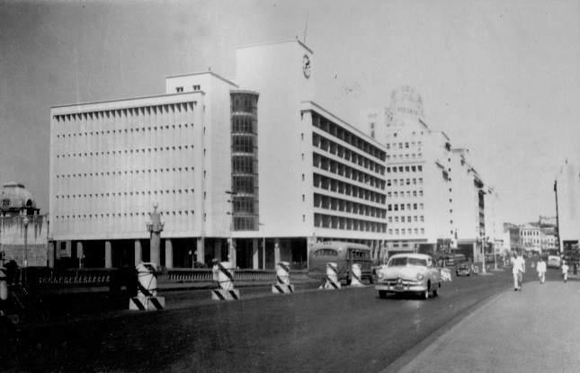
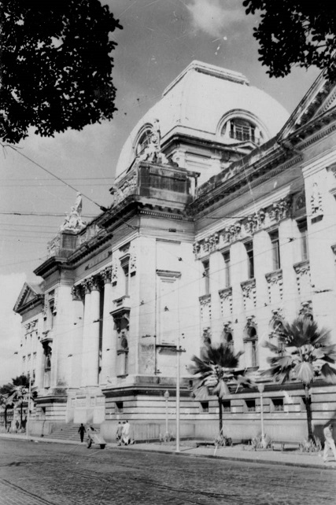
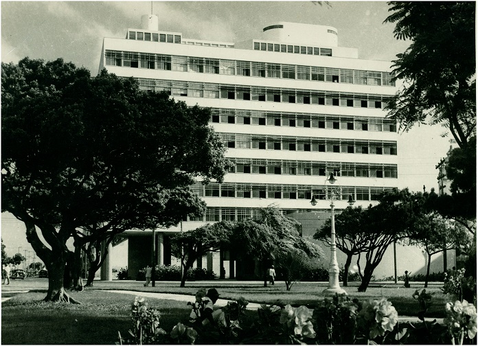
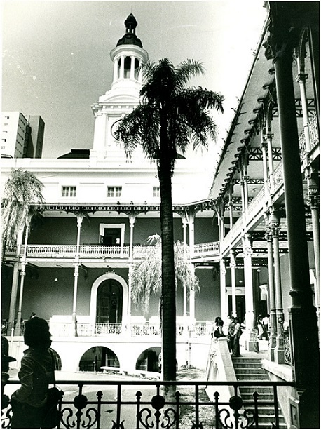
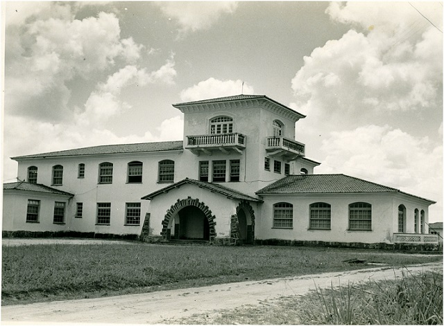

A Assembleia Legislativa, os Correios e o Palácio da Justiça são algumas edificações antigas que fazem parte da história da cidade do Recife. Fizemos uma seleção de sete imagens de prédios públicos antigos da capital pernambucana da Biblioteca do IBGE. Confira as imagens abaixo.
1. Correios e Telégrafos, em 1952
2. Palácio da Justiça de Pernambuco, em 1957
3. Secretaria da Fazenda
4. Faculdade de Direito do Recife
5. Instituto Agronômico do Nordeste
Criado na década de 1940 e instalado em janeiro de 1951, tinha sede na Estação Experimental de Cana–de–Açúcar no Curado, no Recife. Em 1962, passou a sua denominação atual (Instituto de Pesquisas e Experimentação Agropecuárias do Nordeste), e em 1973, foi desativado.
